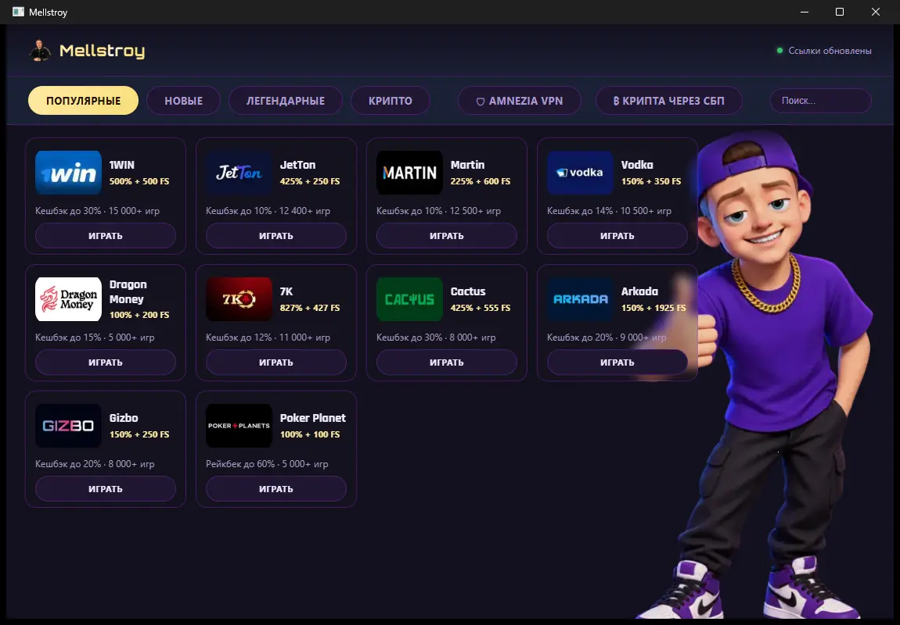

Mellstroy — приложение с каталогом онлайн-казино, бонусами, фриспинами, кешбэком и актуальными рабочими зеркалами. В одном месте собраны популярные, новые, легендарные и крипто-казино: выбирайте площадку, открывайте рабочую ссылку и переходите к игре без долгих поисков.

Каталог онлайн-казино от Mellstroy объединяет игровые площадки с приветственными бонусами, бесплатными вращениями, кешбэком, слотами, live-казино и ставками на спорт. В карточках сразу видны основные условия: размер бонуса, количество фриспинов, доступные игры и дополнительные предложения для постоянных игроков. Смотреть полный каталог →
В разделе популярные онлайн-казино собраны площадки с крупными бонусами на первый депозит, регулярными акциями и большой коллекцией игр. Здесь удобно сравнить предложения известных брендов, выбрать казино с нужным размером кешбэка и перейти к игре по актуальной ссылке.
Новые онлайн-казино 2026 года предлагают повышенные приветственные пакеты, фриспины за регистрацию и дополнительные бонусы для первых депозитов. В каталоге Mellstroy представлены свежие игровые площадки с современными слотами, мобильным интерфейсом, live-дилерами и программами лояльности.
Легендарные онлайн-казино — известные игровые бренды с большой аудиторией, тысячами слотов, настольными играми и регулярными турнирами. Такие площадки выбирают за узнаваемых провайдеров, широкий выбор развлечений, бонусные программы и привычный формат игры.
Крипто-казино принимают Bitcoin, USDT, Ethereum, Litecoin и другие цифровые валюты для пополнения игрового счёта и вывода средств. Этот формат выбирают за быстрые платежи, повышенные лимиты, конфиденциальность и отдельные бонусы при использовании криптовалюты.
Рабочие зеркала онлайн-казино помогают сохранить доступ к игровой площадке, когда основной адрес временно недоступен. Mellstroy отслеживает актуальные ссылки в каталоге и показывает рабочий вход для выбранного казино, поэтому не нужно искать новые домены в старых статьях, закладках и случайных каналах.
Ссылки на казино могут меняться, а старые адреса быстро теряют актуальность. В приложении Mellstroy выбранная площадка открывается по текущей рабочей ссылке: достаточно найти казино в каталоге и перейти из его карточки.
Популярные казино, новые игровые проекты, легендарные бренды и крипто-площадки собраны в одном каталоге. Не нужно держать десятки вкладок, запоминать домены и вручную проверять, где сейчас доступна нужная площадка.
Перед переходом к казино можно увидеть заявленный приветственный бонус, количество фриспинов, размер кешбэка и число доступных игр. Это позволяет быстрее сравнить предложения и выбрать площадку под слоты, live-казино, ставки или быстрые игры.
Приложение Mellstroy доступно для Android и Windows. Установите APK на смартфон или программу на компьютер, откройте каталог казино и используйте рабочие зеркала, бонусные предложения и подборки игровых площадок в одном интерфейсе.
Версия Mellstroy для Android позволяет открыть каталог онлайн-казино со смартфона и быстро найти нужную площадку. APK скачивается с официального сайта, после установки приложение даёт доступ к категориям казино, бонусам и актуальным ссылкам.
Версия Mellstroy для Windows подходит для игроков, которые предпочитают искать казино и открывать игровые площадки с компьютера. В приложении доступны те же категории каталога, карточки с бонусами и рабочие ссылки на выбранные казино.
Скачайте Mellstroy для Android или Windows и установите приложение на устройство. После запуска каталог казино будет доступен в одном окне без необходимости искать площадки вручную.
Откройте подходящую категорию: популярные казино, новинки, легендарные бренды или крипто-казино. В карточке площадки можно посмотреть бонусы, фриспины, кешбэк, количество игр и другие основные условия.
Выберите казино в каталоге и нажмите кнопку перехода. Mellstroy использует актуальный адрес площадки, чтобы вы могли открыть выбранное казино без поиска зеркал и старых ссылок.
Скачайте Mellstroy для Android или Windows, чтобы держать каталог онлайн-казино, бонусы, фриспины и рабочие зеркала под рукой. Выберите нужную площадку в каталоге и переходите к игре по актуальной ссылке.